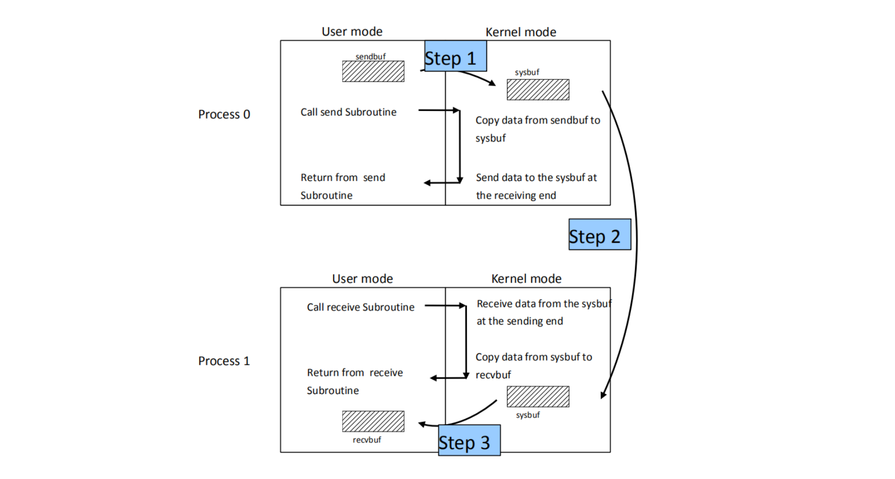
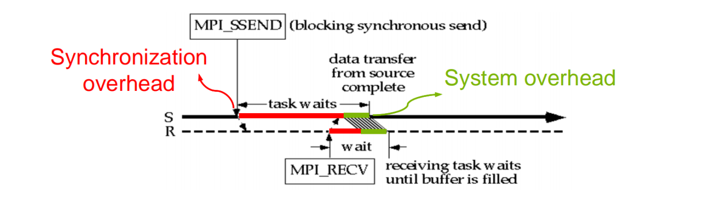
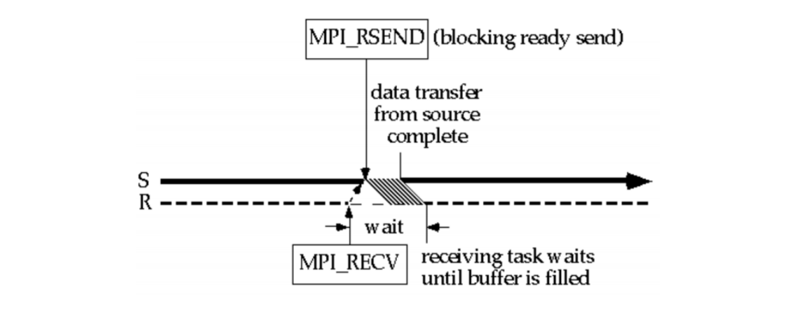
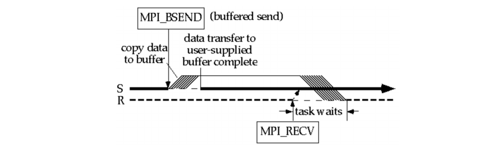
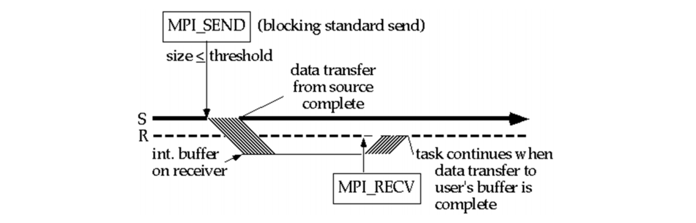
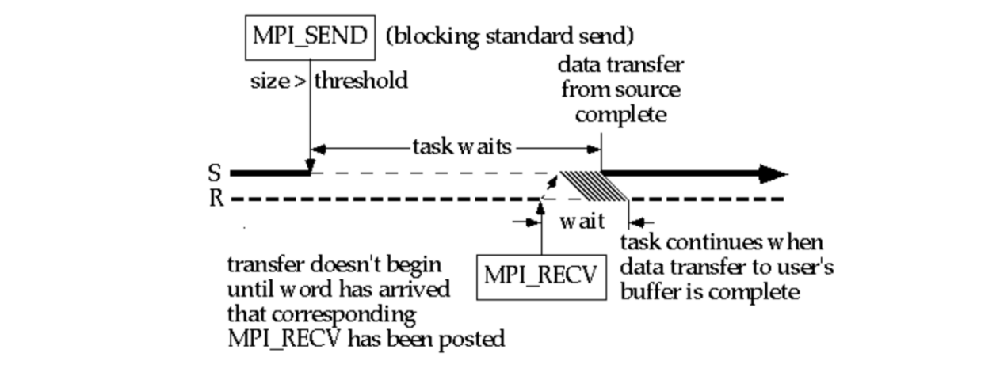
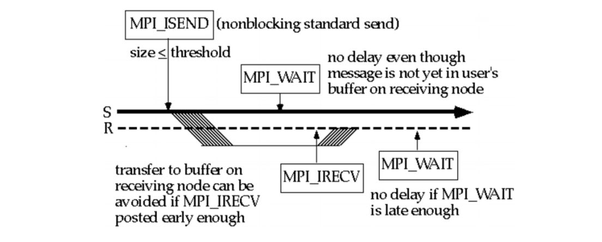

Point-to-Point Communication
The message envelope consists of the following information:
- The rank of the receiver
- The rank of the sender
- A tag
- Distinguish messages from a single process
- A communicator
MPI_Send
Blocking send
1 | int MPI_Send(void* message, |
MPI_Recv
Blocking receive
1 | int MPI_Recv(void* message, |
MPI Data Types
https://www.mpi-forum.org/docs/mpi-2.1/mpi21-report-bw/node330.htm
MPI_Status object
1 | MPI_Status status; |
Example
1 |
|
Communication Mode
- Buffered
- Ready
- Standard
- Synchronous
Each of these communication modes has both blocking and non-blocking primitives:
- blocking
- The send call blocks until the send block can be reclaimed
- The receive function blocks until the buffer has successfully obtained the contents of the message
- non-blocking
- Allow the possible overlap of communication with computation
- Communication is usually done in 2 phases
- the posting phase
- the test for completion phase
Basic concepts

Blocking
Synchronization Overhead
the time spent waiting for an event to occur on another task
System Overhead
the time spent when copying the message data from sender’s message buffer to network and from network to the receiver’s message buffer.
Synchronous Send

MPI_Ssend(): “ready to send” message is sent from the sending task to receiving task.MPI_Recv(): “ready to receive” message is sent, followed by the transfer of data
Synchronization Overhead:
- Sender 要等待 Receiver 回覆 handshake 後才開始傳輸
- Receiver 要等待 Sender 回覆 handshake 後才開始接收
System Overhead:
- copying from sender & receiver buffers to the network.
Ready Send

MPI_Rsend(): Sender 收到 “ready to receive” 再將 user-supplied buffer 送往 Receiver- If “ready to receive” message hasn’t arrived, the ready mode send will incur an error and exit.
Buffered Send

MPI_Bsend()先將數據複製到 user-supplied buffer，複製完馬上 return- Sender 收到 “ready to receive” 再將 user-supplied buffer 送往 Receiver
Synchronization overhead:
- Sender 不用等待 Receiver 回應
- receiving process can still be incurred, because if the receive is executed before the send, the process must wait before it can return to the execution sequence
System Overhead:
- Replicated copies of the buffer
Standard Send

When the data size is smaller than a threshold value:
MPI_Send()Sender 將數據複製到 Receiver 的 sysbufMPI_Recv()Receiver 將數據從 sysbuf 複製出來
The decreased synchronization overhead is usually at the cost of increased system overhead due to the extra copy of buffers
Buffered Standard Send
When the message size is greater than a threshold

- The behavior is same as for the synchronous mode
- Small messages benefit from the decreased chance of synchronization overhead
- Large messages results in increased cost of copying to the buffer and system overhead
Non-blocking

Sender:
MPI_Isend()posts a non-blocking standard send when the message buffer contents are ready to be transmitted- The control returns immediately without waiting for the copy to the remote system buffer to complete
MPI_Waitis called just before the sending task needs to overwrite the message buffer- Programmer is responsible for checking the status of the message to know whether data to be sent has been copied out of the send buffer
Receiver:
MPI_Irecv()issues a non-blocking receive as soon as a message buffer is ready to hold the message- The non-blocking receive returns without waiting for the message to arrive
- The receiving task calls
MPI_Waitwhen it needs to use the incoming message data
test without waiting using MPI_TEST:
MPI_TEST(request, flag, status)
Deadlock
A situation where the dependencies between processors are cyclic
MPI does not have timeouts
1 | if (rank == 0) { |
- If the message sizes are small enough, this should work because of systems buffers
- If the messages are too large, or system buffering is not used, this will hang
Solution:
1 | if (rank == 0) { |
1 | if (rank == 0) { |